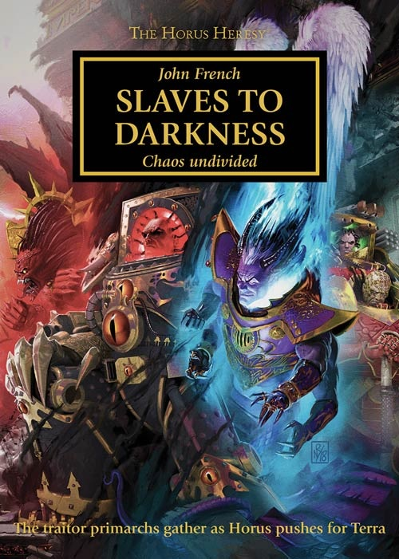

SLAVES TO DARKNESS

Author: John French
Format: Novel
With the traitor fleet closing on Terra, rival ambitions threaten to fracture the Warmaster’s hosts. Maloghurst must bring them together before the attack can begin.
Introduction reviewed against Black Library’s description on 2026-09-27. The publisher page may contain spoilers.
Publication facts: publisher source, checked 2026-09-26.
Open this work in the interactive Archive to track reading progress and explore related works.
Take the three-question memory check for this work. The quiz contains story spoilers.